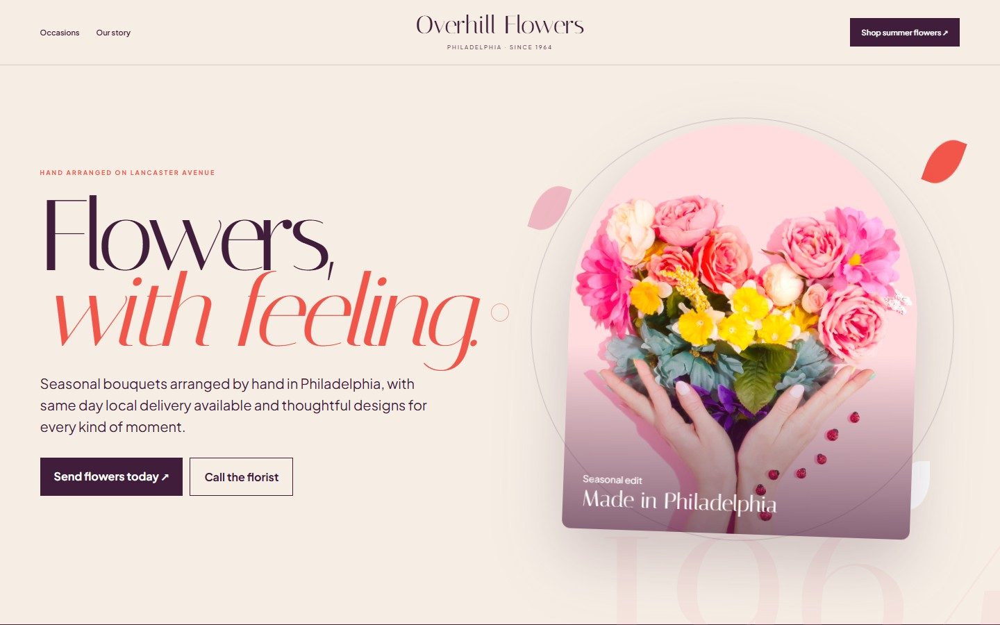
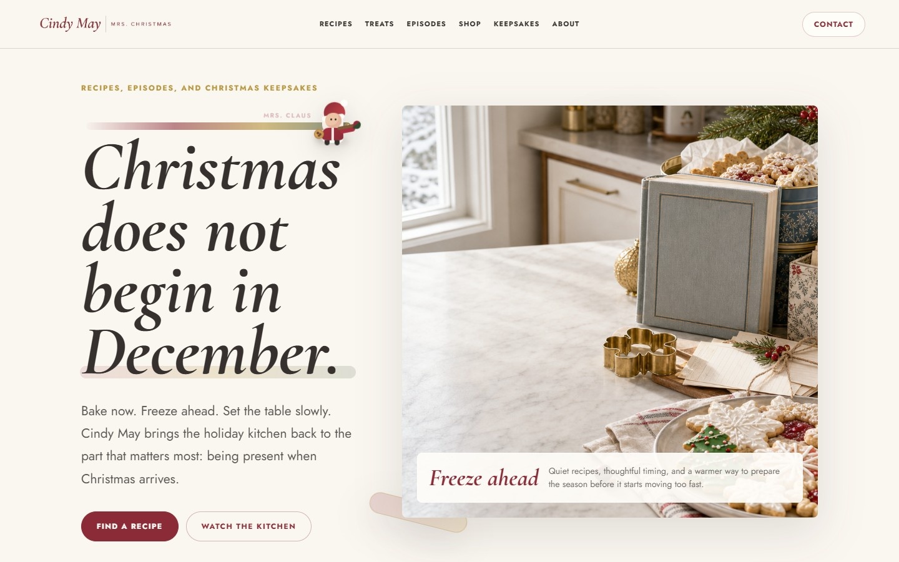
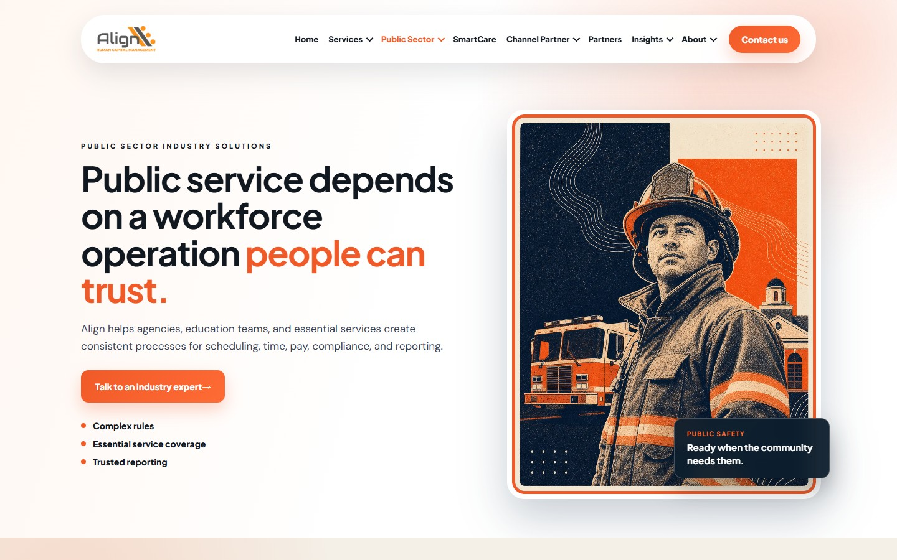
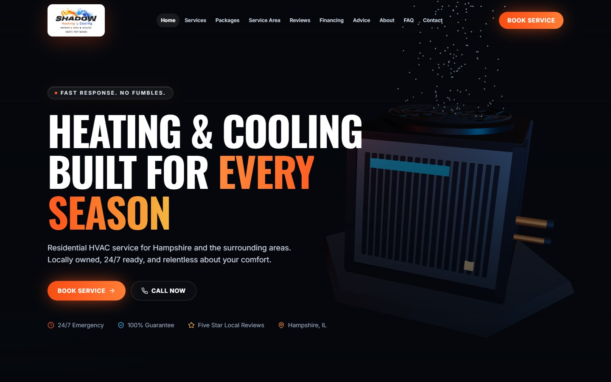

Align HCM · Organic
9 qualified leadsA refreshing look at what I can add to BigOrange
Take the busywork off the plate.Keep the good stuff human.
I can handle the reporting, technical digging, and repeatable production so BigOrange can help more clients get found, get leads, and grow.
Work A few favorites
Clear stories. Beautiful websites.
An obvious next step.
Different businesses need different personalities. The common thread is a site that feels human, explains the value quickly, and gives people somewhere useful to go.

Warm B2C · Floral
Overhill Flowers
Flowers should feel personal before they ever reach the vase. This one does, and makes ordering the easy part.
Warm B2C · Food
Cindy May
Holiday shopping, but make it feel like you just walked into somebody’s warm kitchen.
Local service · Roofing
Graveley Roofing
Philadelphia grit, neighbor-level trust, and one very obvious way to ask about your roof.
Public sector · UX
Public Sector
A whole lot to explain, arranged so a real person can still find the answer.
B2B service · Live
AMI Commercial Cleaning
A serious cleaning company, minus the cold corporate website. Local search lands on a clear path to a quote.
Home service · Live
Shadow Heating & Cooling
Home comfort without the same blue-and-red HVAC template everybody else got.
Platform · Redesign
Momentum 360
A big visual idea that finally earns its name: put your business on the map.Align HCM · Revenue
$54K closed wonShadow · Meta
$14.40 cost per leadAMI · Search
1,833 impressions in 9 daysClient totals only · dates, sources, and tracking gaps are listed below
One good idea should keep earning
Squeeze more from
the good stuff.
A campaign should not disappear into three tabs and a Friday status call. I can turn the source material into pages, posts, briefs, and a report everyone can understand.
Direct from bigorange.marketing
This isn’t a mockup.
It’s checking BigOrange right now.
Starting the live pull…
Calling the production homepage.
Reading the live Yoast sitemaps.
Latest public WordPress modification.
Testing discovery and protection.
Reading robots.txt as published.
WordPress REST and sitemap inventory are loading.
Live public feed is connecting.
Now What we found
You do not need another shiny thing.
You need the good stuff talking to each other.
The live pull just confirmed 344 indexable URLs, a sturdy WordPress setup, and a team teaching clients about AI search. I’d connect those pieces so nobody has to play detective when a client asks what worked.
Fresh public audit · July 16
344 ways to get found.
Let’s make them count.
The Yoast sitemap has 294 posts and 50 pages. That is plenty to build stronger topic clusters, answer real customer questions, and show AI tools who BigOrange actually knows how to help.
See the live sitemap ↗344URLs
294 posts
50 pages
WordPress is waving hello
MCPWordPress already left the door cracked open.
The public REST index shows an MCP route and a default server path. In normal-person English: there is already a clean place to connect research, content, and reporting.
Ready to testSemrush hooks? Yep.
SESemrush is already in the room.
Yoast already exposes Semrush authentication and related-keyphrase routes. Less duct tape. Faster path from keyword research to a page the team can actually ship.
Ready to connectWho gets through
Let the helpful bots in.
Keep the grabby ones out.
- Allowed OAI SearchBot · Perplexity · Semrush
- Blocked GPTBot · ClaudeBot · CCBot
Three quick wins
- Fix
Clean up the homepage search description typo.
- Simplify
Give the AI service page one H1. Four is doing too much.
- Connect
Follow the trail from call or form to proposal and client.

The real people behind the work · Instagram · Jul 7
The people stay in the picture.
AI can handle the first pass. BigOrange gets the last word. I can collect the numbers, prep the brief, refresh the report, and catch the weird math. Your team keeps the relationships, judgment, and voice clients came for.
Briefs preppedReports refreshedTracking checkedHumans approve
Open the original team post ↗
Proof The real numbers
Nobody here is promising the moon.
Here’s what the numbers actually say.
Fresh when fresh. Dated when dated. Missing when missing. Because a dashboard should make the next client conversation easier, not sit there looking important.
Fresh source
Pulling the good stuff together…
What changed
Activity over time
Where it came from
Traffic sources
So what?
Pages, events, and next steps
Totals only. No names or form answers. That stuff stays private.
The private stuff stays private
This showcase uses totals, not people. No names, emails, form answers, contact IDs, credentials, or private account links. Lighthouse scores are one-time mobile lab checks, not field Core Web Vitals.
+ Why it helps
Less digging for your team.
Better answers for every client.
More room for the good stuff
Let the terminal handle the repeatable digging and checking. The team gets more time for strategy, creative work, and actual conversations with clients.
A next step they can actually see
Connect what people search, what they read, what they do, and what turns into business. Then show the client what to do next.
Flow How it works
The terminal does the boring stuff.
The team does the smart stuff.
One client question should not require five tabs and a tiny scavenger hunt. The terminal pulls the numbers, checks the math, and hands the useful part back to a human.
GA4Search ConsoleSemrushHubSpotMetaGoogle AdsWordPress
bigorange-growth-os
PULLthe fresh stuff
MATCHdates, sources, and leads
QAtracking gaps and funny math
HAND BACKthe useful part
✓ digging done. humans get the last word.
Executive dashboardTechnical backlogContent planConversion briefClient report
WordPress × Semrush MCP
Semrush brings the homework.
WordPress puts it to work.
Semrush finds what people are asking, where competitors are winning, and which pages need help. WordPress shows what is already live. Put them together and the team gets a useful brief, not another spreadsheet quietly growing cobwebs.
Start read-onlyEasy to turn offNo mystery permissionsHumans hit publish
SESemrush MCP
research⇄context
WBigOrange WordPress
inventorybriefdraftQA
SEO
Fix the technical stuff, build useful topics, and help the right people land on the right page.
AEO
Give people and AI tools a straight answer they can understand, trust, and use.
GEO
Show who you are, what you know, and the proof that makes your answer worth recommending.
CRO
Make the promise clear, the page quick, and the next step too obvious to miss.
Next The first 90 days
Do something useful first.
Then do it again on purpose.
Days 01–30
Get the lay of the land
- Map access and measurement
- Check templates and technical basics
- Agree on what counts as a lead
- Build the first useful report
Days 31–60
Ship the first wins
- Fix the pages that matter most
- Pilot Semrush and WordPress
- Build answer-first content
- Start the reusable design kit
Days 61–90
Make it run without babysitting
- Refresh the proof automatically
- Grow the right topics
- Keep a short conversion fix list
- Give leadership the clear version
Trust Sources + boundaries
We’ll show our work.
BigOrange’s public website, sitemap, and social examples were checked July 16, 2026. AMI GA4 was refreshed July 16. Shadow combines a live Netlify check with the verified seven day Meta view from July 13. Everything is aggregate. When a source is dated or a connection is missing, it says so.